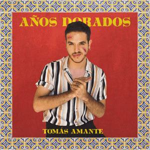
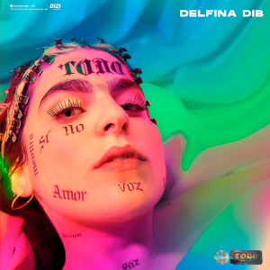
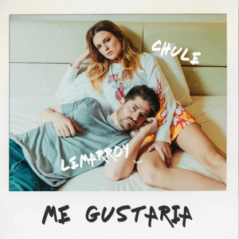

Ultimas Noticias
WOS se llevó seis de las ocho nominaciones
Wos se convirtió en el primer artista de música urbana en ganar el Gardel de Oro . No sólo eso: se convirtió en el músico más joven en alcanzar semejante hazaña.

TOMAS AMANTE

Delfina Dib
